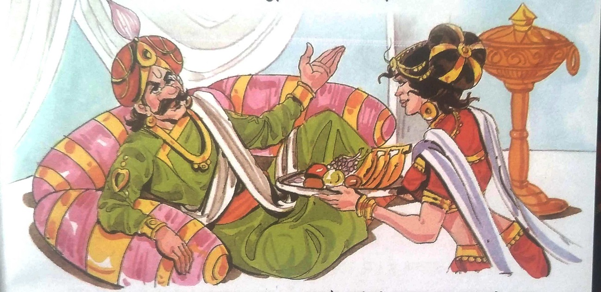
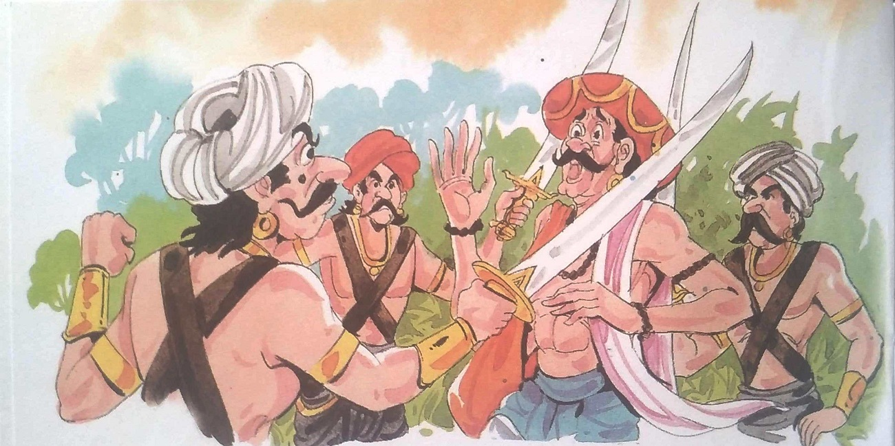
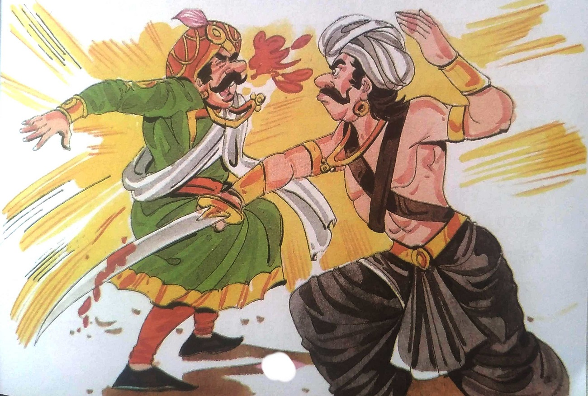
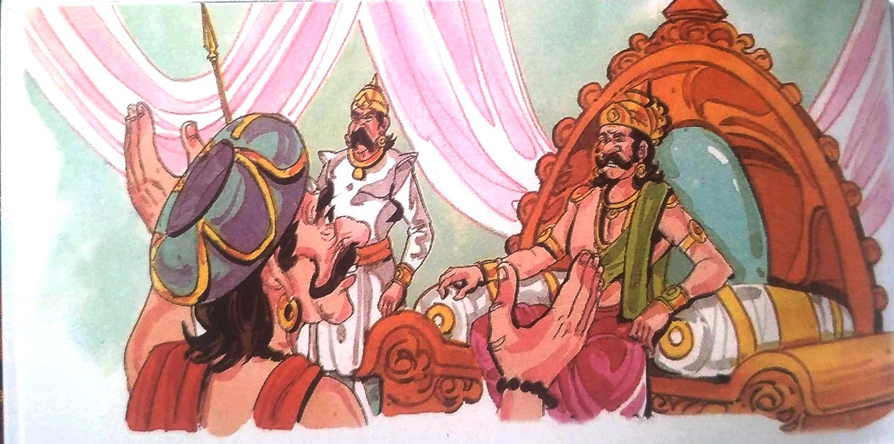
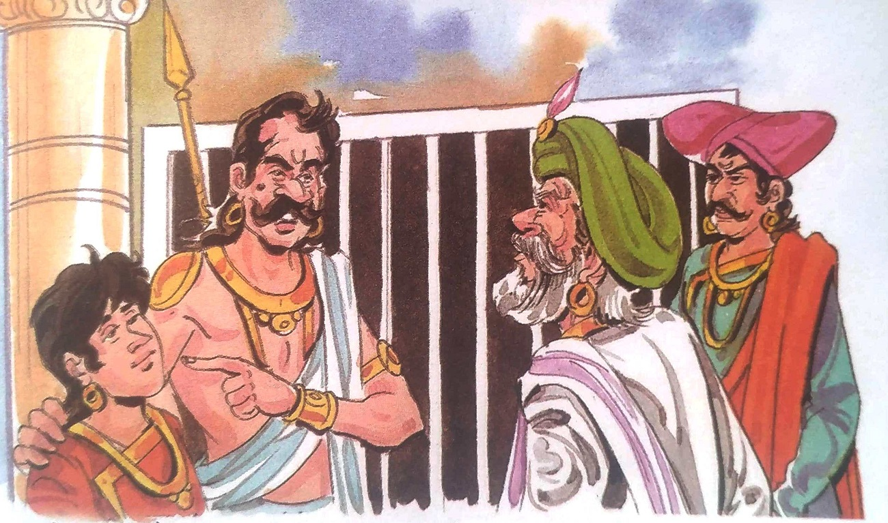
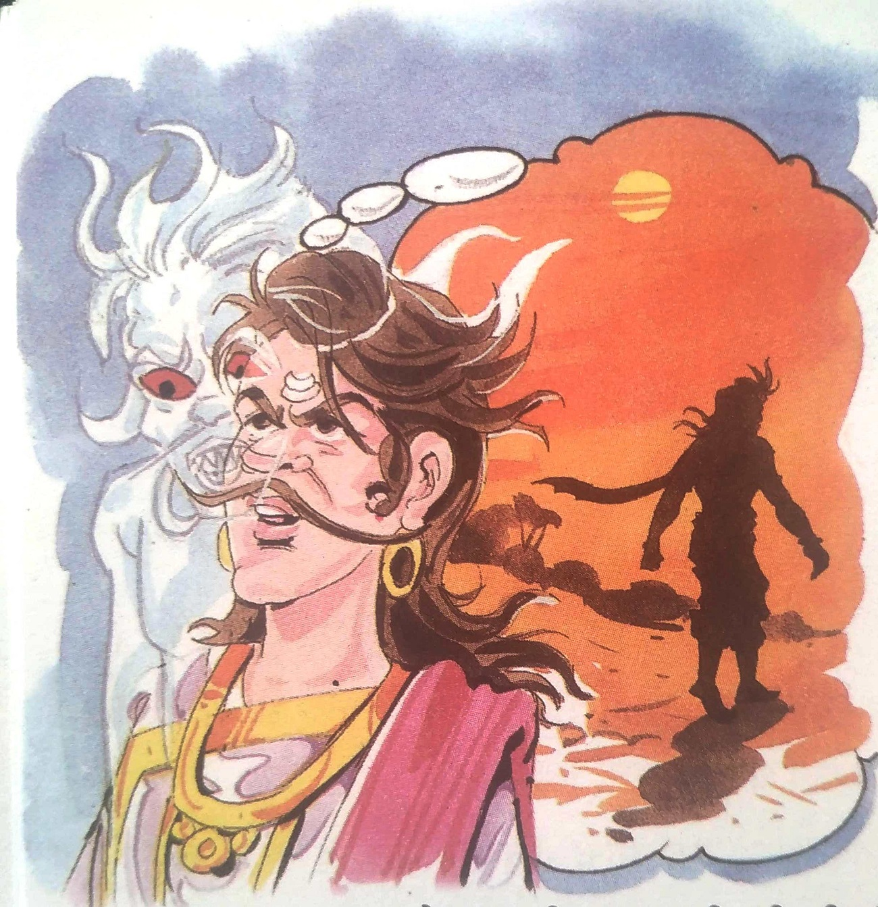

૩-ખુશામતનો કેદી

રાજા વિક્રમાદિત્ય મૃતદેહને ઝાડ પરથી ઉતારીને તેની સાથે સ્મશાન તરફ આગળ વધ્યા. જ્યારે
વેતાલાએ વાર્તા કહેવાનું શરૂ કર્યું ત્યારે તેઓ થોડાં જ પગલાં ચાલ્યા હતા-
ઘણા સમય પહેલા સુરજ સિંહ વિનયપુર પર રાજ કરતો હતો. તે સાવ અયોગ્ય રાજા હતો. તેણે તેની
પ્રજા પાસેથી કરની સારી રકમ વસૂલ કરી અને તેને પોતાની સુખ-સુવિધાઓ પર ખર્ચી નાખી. એકવાર રાજાએ
વિદ્વાનોની બેઠક યોજી. વિદ્વાનોએ ખુલ્લેઆમ રાજાની પ્રશંસા કરી. તેના ખોટા વખાણ અને ખુશામતથી રાજા
ખૂબ જ ખુશ થયો અને તેને ઈનામ આપ્યું.
તેના રાજ્યમાં ભીમવીર નામનો એક ડાકુ હતો. તે રાજા અને તેના અધિકારીઓના વર્તન વિશે જાણતો
હતો. તેના કેટલાક સહયોગી પણ હતા, જેની સાથે તે અધિકારીઓ અને ધનિક વેપારીઓને લૂંટતો હતો. રાજાએ તેને
પકડવાની ઘણી કોશિશ કરી, પરંતુ તેના તમામ પ્રયત્નો વ્યર્થ ગયા.
એક સાંજે રોહિત પાંડે નામનો પંડિત રાજાની સભામાંથી ઘરે પરત ફરી રહ્યો હતો. જ્યારે તે
નિર્જન રસ્તા પરથી પસાર થઈ રહ્યો હતો, ત્યારે અચાનક ભીમવીર તેના સાથીઓ સાથે તેની સામે દેખાયો અને
કહ્યું, "તમારી પાસે જે હોય તે મને સોંપી દો."

રોહિત પાંડેએ કહ્યું, "હું એક ગરીબ બ્રાહ્મણ છું. હું રાજા પાસેથી ઈનામ કમાઉ છું અને
મારી સેવા દ્વારા મારા પરિવારને ટેકો આપું છું. કૃપા કરીને મને જવા દો," રોહિત પાંડેએ કહ્યું.
'તને રાજા તરફથી જે ઈનામ મળ્યું છે તે રાજાએ પ્રજાના લોહી અને પરસેવાની કમાણી ને
લૂંટીને જે ધન મળ્યું છે તેમાથી તને આપ્યું છે. રાજા તેની પ્રજાનું બહુ ખરાબ રીતે શોષણ કરે છે”
ભીમવીરે થોડા ગુસ્સા સાથે કહ્યું.
"તો શા માટે તમે આ રાજ્યને રાજાના અત્યાચારોમાંથી મુક્ત નથી કરાવતા?" પંડિત રોહિત
પાંડેએ પૂછ્યું.
"હું આ રાજ્યને રાજાના જુલમમાંથી કેવી રીતે મુક્ત કરી શકું?" લૂંટારાએ પૂછ્યું.
"રાજા બન્યા પછી, તમારામાં રાજા બનવાના તમામ ગુણો છે. આખા રાજ્યમાં તમારાથી વધુ બહાદુર
અને હિંમતવાન
કોઈ નથી. તમારા સિવાય, રાજા બનવાની ક્ષમતા બીજા કોઈમાં નથી," પંડિતે કહ્યું. ભીમવીરની પ્રશંસા કરતી
વખતે. તેમના વખાણ સાંભળીને ભીમવીર ખૂબ જ ખુશ થયો. પંડિતને છોડીને તેણે કહ્યું, "તમે જઈ શકો છો.
તમારી સલાહ બદલ આભાર!" પંડિત રોહિત પાંડે તરત જ ત્યાંથી નીકળી ગયા. તેના ગયા પછી ભીમવીર સિંહાસન
કબજે કરવાની વ્યૂહરચના વિચારવા લાગ્યો. હવે ભીમવીર તેનો મોટાભાગનો સમય આ વિશે વિચારવામાં પસાર કરતો
હતો. અંતે તેને યુક્તિ મળી ગઈ. તે, તેના સહયોગીઓ સાથે, એક શ્રીમંત વેપારી બન્યો અને પોતાને રાજાના
મુખ્ય લશ્કરી કાર્યાલયની સામે સ્થાયી કર્યો. તેણે લશ્કરી અધિકારીઓની સામે ખૂબ જ ઠાઠમાઠ અને પ્રદર્શન
કર્યું. તેના સાથીઓએ લશ્કરી અધિકારીઓને લાંચ આપીને મહેલ તરફ જતો ગુપ્ત રસ્તો શોધી કાઢ્યો.
એક રાત્રે ભીમવીરે તમામ લશ્કરી અધિકારીઓને પોખુશામતનો કેદીતાના સ્થાને મિજબાની માટે
આમંત્રણ આપ્યું. તેણે તેમના
ભોજનમાં ડ્રગ્સ ભેળવી દીધું જેના કારણે બધા બેભાન થઈ ગયા. ભીમવીર તેના સાથીઓ સાથે ગુપ્ત માર્ગે
મહેલમાં પ્રવેશ્યા. રાજાના રક્ષકોએ એલાર્મ વગાડ્યું પરંતુ એક પણ સૈનિક કે લશ્કરી અધિકારી ભાનમાં ન
હતો. ભીમવીરે રાજાને મારી નાખ્યો અને પુત્રને જેલમાં ધકેલી દેવામાં આવ્યો.

બીજા દિવસે સવારે ભીમવીરે પોતાને વિનયપુરનો રાજા જાહેર કર્યો. તેના ડરને લીધે, બધા
દરબારીઓ અને
મંત્રીઓએ તેમની સંમતિ આપી. પરંતુ એક વૃદ્ધ બ્રાહ્મણે કહ્યું, "અમે માનીએ છીએ કે રાજા સૂરજ સિંહ ખરાબ
હતા. પરંતુ તેમની જગ્યાએ કોઈ આવીને સિંહાસન પર બેસી શકે નહીં. જેનો વંશ અજાણ હોય તે વ્યક્તિ
વિનયપુરની ગાદી પર કેવી રીતે બેસી શકે?"

આ સાંભળીને ભીમવીર કંઇક બોલી શક્યો તે પહેલાં એક બ્રાહ્મણ આગળ આવ્યો અને કહ્યું, "હું
તેના પૂર્વજો
વિશે જાણું છું. તેના પરદાદાના પરદાદા રાજા સુમંત્રગૃહના પિતરાઇ ભાઇ હતા. તેથી તે આ સિંહાસન પર
બેસવાને લાયક છે. છેવટે, તે જ છે. સુમંત્રગૃહના પુત્ર." ના વંશજ છે." આ સાંભળીને ભીમવીર ખૂબ જ ખુશ
થયો. તેમનો રાજ્યાભિષેક ખૂબ જ ધામધૂમથી થયો હતો. તેણે એક બ્રાહ્મણને પોતાનો મુખ્ય સલાહકાર બનાવ્યો
જે તેના પૂર્વજો વિશે જાણતો હતો.
સમય આમ જ પસાર થવા લાગ્યો. એક દિવસ મુખ્ય સલાહકારે તેમને કહ્યું, "મહારાજ! તમે
વિદ્વાનોનો મેળાવડો
યોજો અને તેમને પુરસ્કારો આપો. તેનાથી તમારી ખ્યાતિ ફેલાશે. સમગ્ર રાજ્યમાંથી વિદ્વાનોને બોલાવવા
જોઈએ." ભીમવીરે તેની સંમતિ આપી.
વિદ્વાનોના મેળાવડામાં પંડિત રોહિત પાંડેને પણ બોલાવવામાં આવ્યા હતા. રોહિત પાંડે જેવો
દરબારમાં
આવ્યો કે તરત જ તેણે કહ્યું, "મહારાજ. મારે જલ્દી જવાનું છે. તમે જાણો છો કે મારો રસ્તો નિર્જન છે.
એક લૂંટારો હમણાં જ જંગલમાં આવ્યો છે. તેથી લૂંટના ડરને લીધે મારે અંધારું થાય તે પહેલાં ઘરે
પહોંચવું છે." આ સાંભળીને ભીમવીરનો ચહેરો પડી ગયો. તે વિચારમાં ખોવાઈ ગયો. તે શારીરિક રીતે દરબારમાં
હતો, પણ તેનું મન બીજે ક્યાંક હતું. સભા પૂરી થયા પછી તેણે કહ્યું. બધા વિદ્વાનોને પુરસ્કાર. પછી તે
તેના રૂમમાં ગયો. રાત્રે તેણે સૂરજ સિંહના પુત્રને જેલમાંથી મુક્ત કર્યો. પછી તેણે તેના મંત્રીઓને
બોલાવ્યા અને કહ્યું, "હું સૂરજ સિંહના પુત્રને તમને સોંપું છું. તમે લોકો કાલે તેનો રાજ્યાભિષેક
કરો અને તેને રાજા બનાવો. અને હા, મને ફોલો કરવાનો કે મને ટ્રેક કરવાનો પ્રયાસ કરશો નહીં."

ભીમવીર મધ્યરાત્રિ પછી મહેલમાંથી નીકળી ગયો. ત્યાર બાદ તેનો ક્યાંય પત્તો લાગ્યો ન હતો.
બેતાલે અહીં વાર્તા સમાપ્ત કરી. વાર્તા પૂરી કરીને તેણે રાજા વિક્રમાદિત્યને કહ્યું,
"રાજા, મને કહો
કે ભીમવીરે સિંહાસન કેમ છોડ્યું? મારા પ્રશ્નનો જલ્દી જવાબ આપો. મારા પ્રશ્નનો જવાબ જાણ્યા પછી પણ
જો તમે મૌન રહેશો તો તમારા માથાના ટુકડા કરી દેવામાં આવશે. ટુકડા કરી નાખો."
રાજા વિક્રમાદિત્યએ તરત જ જવાબ આપ્યો, “ભીમવીરના ચારિત્ર્યમાં બે ગુણો હતા. તે હિંમતવાન
હતો અને
રાજા સૂરજ સિંહના અન્યાયનો અંત લાવવા માંગતો હતો. પરંતુ તે મહત્વાકાંક્ષી પણ હતો અને ખુશામત પણ પસંદ
કરતો હતો. તે ભૂલ્યા ન હતા કે પંડિત રોહિત પાંડેની ખુશામતને કારણે જ તેની રાજા બનવાની
મહત્વાકાંક્ષાનો જન્મ થયો હતો. તેને ખબર હતી કે પડિયાએ પોતાનો જીવ બચાવવા અને લૂંટથી બચવા માટે જ
ખુશામતનું આ કૃત્ય કર્યું હતું. બીજી વખત તે એક બ્રાહ્મણ દ્વારા ખુશામત કરવામાં આવ્યો જેણે તેના
પૂર્વજોને જાણવાનો દાવો કર્યો હતો. તેથી, જ્યારે ભીમવીરે આખી ઘટના વિશે વિચાર્યું, ત્યારે તેણે
પોતાને ખુશામતનો શિકાર જોયો. તેમને હજુ સુધી લોકોનું સમર્થન મળ્યું ન હતું. તે સિકોફન્ટ્સ અને
સ્વાર્થી લોકોની તાકાત પર રાજ કરી રહ્યો હતો.

પણ વાસ્તવમાં ભીમવીર એક સારો વ્યક્તિ હતો. જ્યારે તેને પાંડે પાસેથી ખબર પડી કે નવો
ડાકુ માથું
ઊંચું કરી રહ્યો છે ત્યારે તેને આમાં છુપાયેલો અર્થ સમજાયો. તેણે વિચાર્યું કે તેણે જે કર્યું છે,
તે કોઈ બીજું પણ કરી શકે છે. તે પોતાને સંજોગોનો કેદી લાગ્યો. તેને સમજાયું કે તે સિંહાસન પર
બેસવાને લાયક નથી. તેને પોતાની ક્રિયા બદલ પસ્તાવો થઈ રહ્યો હતો. તેથી તેણે સૂરજ સિંહના પુત્રને
મુક્ત કર્યો અને તેને રાજા બનવા કહ્યું.
"સાચું કહ્યું, વિક્રમ. પણ હવે હું જતો રહ્યો છું. કારણ કે તેં મૌન રહેવાની તારી શરત
તોડી નાખી છે."
આટલું કહીને વેતાલા હસી પડ્યો અને ફરી એ જ ઝાડ પાસે ઊડી ગયો અને લટકી ગયો. રાજા વિક્રમાદિત્યએ તેની
તલવાર કાઢી અને ફરીથી મૃતદેહને પરત લાવવા તેની પાછળ ગયા.
|